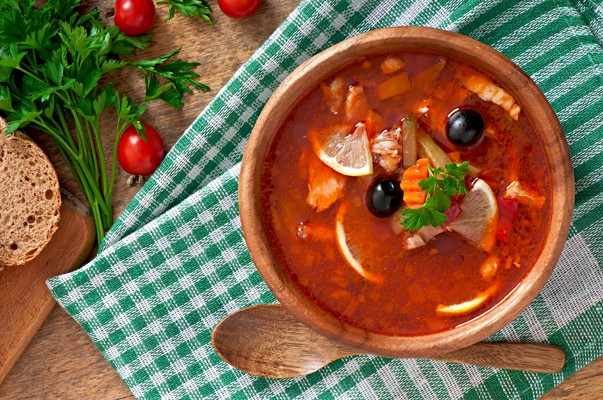

Home
Solyanka

Description
Solyanka is a thick, intensely flavourful traditional Russian soup, renowned for its unique blend of sour, salty, and savoury ingredients. It is a comforting and filling meal, and is prominent in Eastern Europe during colder months.
What makes solyanka special is its adaptability and the customary garnishes added just before serving. A standard bowl usually is topped with fresh lemon slices, black olives, and generous amounts of sour cream. This combination creates a beautiful contrast of textures and flavours that has made the soup a beloved staple for generations.
Ingredients
- 2 large bay leaves
- 6 whole black peppercorns
- 4 whole allspice berries
- 10 cups water
- 4 tablespoons concentrated beef base
- 1/2 medium head green cabbage, shredded
- 1 cup celery, coarsely chopped
- 1 tablespoon vegetable oil
- 2 medium onions, coarsely chopped
- 2 medium carrots, peeled and coarsely chopped
- 1 pound dried sausage, sliced 1/4 inch thick
- 2 medium cooked chicken breasts, cubed
- 1 cup ham, cubed
- 3 large dill pickles, coarsely chopped
- 1 (6-ounce) can tomato paste
- 2 (14-ounce) cans stewed or diced tomatoes
- 3/4 cup sliced black olives
- 2 tablespoons capers
- 1 cup dry white wine
- 1/2 cup sour cream
- 1/2 cup coarsely chopped fresh dill, to taste
- Kosher salt and freshly ground black pepper, to taste
Instructions
- Make a spice sachet by adding the bay leaves, peppercorns, and allspice in a square of cheesecloth. Tie with a long piece of kitchen twine.
- Tie the sachet onto the handle of a large soup pot so that the sachet hangs into the pot.
- Add the water and beef base to the soup pot and bring to a boil. Add the shredded cabbage and chopped celery and return to a boil. Reduce the heat and simmer for 30 minutes.
- Heat the oil in a large skillet. Add the onions and carrots and sauté until translucent.
- Add the sausage, chicken, ham, pickles, and tomato paste. Bring to a boil, reduce the heat, and simmer for 2 minutes. Transfer to the soup pot.
- Add the stewed tomatoes, sliced olives, and capers, and bring it barely to a boil. Add the wine and simmer gently for 20 minutes.
- Remove the sachet and discard. Adjust the seasonings with salt and pepper if necessary.
- Ladle the soup into hot bowls and garnish with the sour cream and dill. Serve hot.